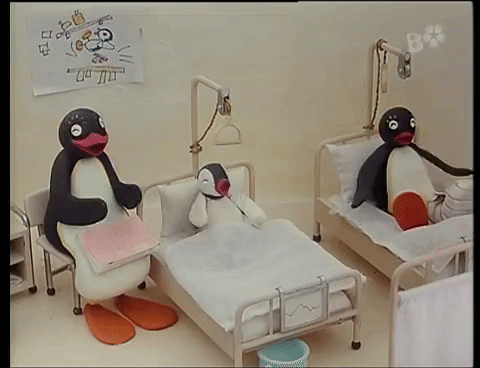

|
 |
 |
 |
|  |
About Manipal Hospital Manipal Hospital Whitefield (MHW) is a unit of the renowned Manipal Hospitals network that is known for Quality and Patient care. It is 280 beds multi-specialty Hospital offering world-class services in the Whitefield area of Bangalore city. Manipal Hospital Whitefield covers the complete range of Preventive and Curative care.
Manipal Hospital Whitefield is equipped with all tertiary care specialists, cutting-edge healthcare technology, and world-class infrastructure to provide top-notch emergency, recovery and rehabilitative care in addition to diagnosis and consultation. Availability of round-the-clock laboratory, Radiology and Pharmacy services in the campus will make patients’ and their relatives’ stay very comfortable.